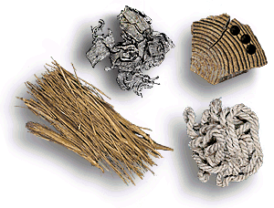

How Old was the Barnack Burial?
 By measuring
how much 14C remains in ancient organic materials, it is possible
to calculate how long ago they died. To do this requires extensive chemical
processing, carried out in laboratories like that of the British Museum, to
convert the carbon in the ancient objects to a form in which the very low level
radioactivity (way below background levels) can be measured.
By measuring
how much 14C remains in ancient organic materials, it is possible
to calculate how long ago they died. To do this requires extensive chemical
processing, carried out in laboratories like that of the British Museum, to
convert the carbon in the ancient objects to a form in which the very low level
radioactivity (way below background levels) can be measured.
This is the equipment used to date the bone in the Museum's laboratories.
Using this glassware we extracted some of the carbon from the man's leg and
measured the amount of radioactivity it contained. From this, using radiocarbon
dating, we were able to tell that the man died between 2330 and 2130 BC, or
just over 4000 years ago, at a time when pyramids were still being built in
Egypt.

Most radiocarbon dating is carried out on bone or charcoal, as these are the
organics that most frequently survive from the past, but many other materials,
like the ancient Egyptian rope, mummy wrappings and reeds shown here, can also
be dated using this technique.
Do you want to find out more about radiocarbon dating?
Radiocarbon Dating, 1990, S Bowman (British Museum Press).
For details on the science behind Radiocarbon dating visit Radiocarbon-WEB
For more information on radiocarbon laboratories world-wide visit the Radiocarbon
home page
For
a full list of publications: Scientific
Publications
Investigate another object?
Techniques